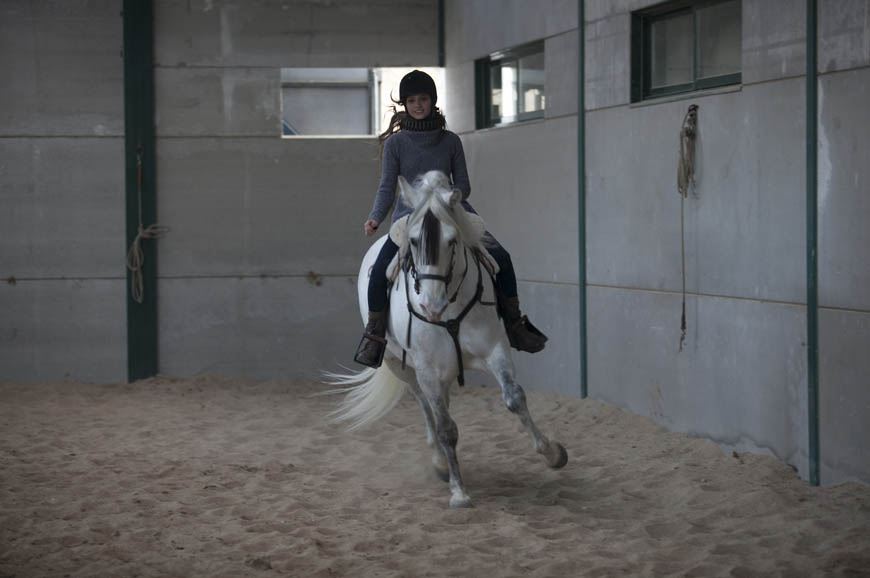
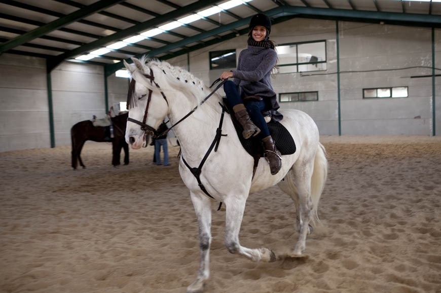
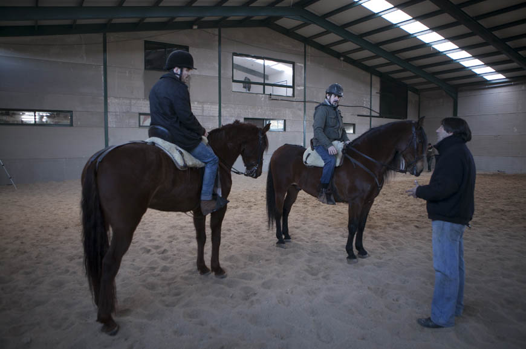
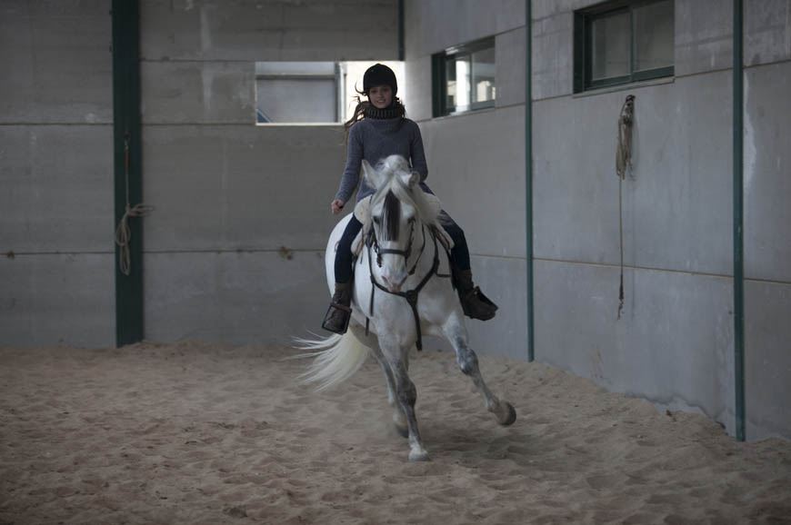
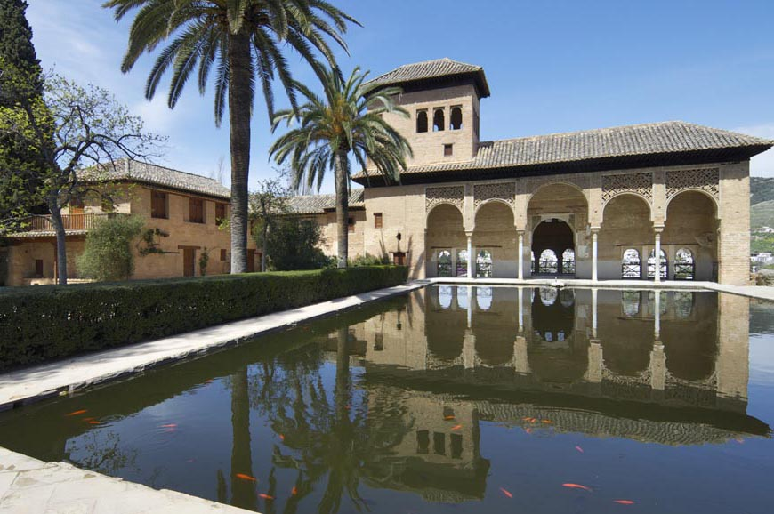
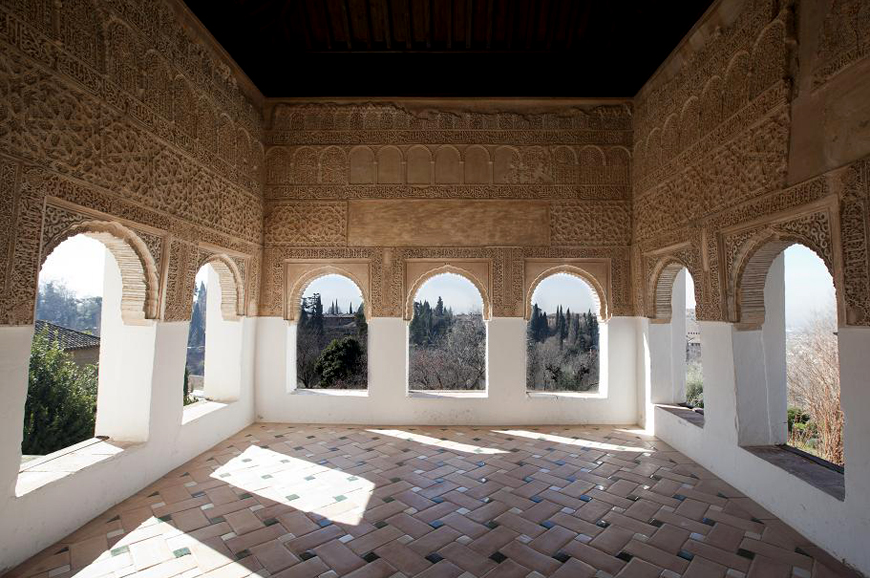
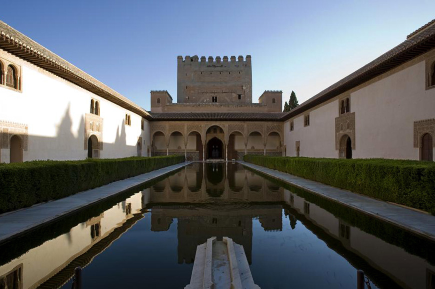

-
-
-
-
cerrar
Gonzalo, un amigo para Boabdil
“Gonzalo Fernández de Córdoba y Boabdil se conocieron después de la batalla de Lucena, en 1.483, cuando Boabdil fue hecho prisionero por los Reyes Católicos. Gonzalo fue la persona que durante los meses de cautiverio estuvo más cerca de él, negociando una alianza con Isabel y Fernando y compartiendo largas horas de conversación. Lo que comenzó como una relación política acabó convirtiéndose no sólo en una visión compartida de la realidad sino en una estrecha amistad. Hasta el punto de que cuando Boabdil fue puesto en libertad bajo la condición de dejar en Castilla a su hijo primogénito -para asegurar de ese modo que cumplirá el pacto alcanzado con Isabel y Fernando- sólo aceptó ese requisito si su hijo quedaba bajo la tutela personal de Gonzalo Fernández de Córdoba, que aceptó el encargo y de ese modo se convirtió en el responsable de la educación del pequeño”, según recoge el libro de Antonio Soler ‘Boabdil, un hombre contra el destino’.
Boabdil y Gonzalo de Córdoba tenían muchas cosas en común: "Ambos compartían una misma visión política de lo que estaba sucediendo. Los dos eran hombres del futuro pero los dos se veían atados a su pasado, a un deber que consideraban por encima de sí mismos. Eran enemigos de los radicales, de los fundamentalistas islámicos que habían decretado la Guerra de Granada como una yihad y de los inquisidores cristianos que habían conseguido bautizarla como una cruzada con la bendición del papa. Ambos conocían la cultura y el idioma del contrario, y preferían comprenderlo antes que demonizarlo. Y sin embargo, los dos aceptaron su destino, combatir el uno contra el otro por lealtad a su país."
¿Cómo fue su relación después de la rendición de Granada?
“La toma de Granada tuvo un componente dramático para Fernández de Córdoba. Su amigo Boabdil caía derrotado y fue precisamente a él, a Fernández de Córdoba, a quien rindió la ciudad antes del acto oficial de entrega a los Reyes Católicos. En lo íntimo, la caída de Granada también suponía una derrota para Fernández de Córdoba y para sus ideas. El incumplimiento de los pactos no hizo sino agravar ese dolor. Pero Gonzalo era un hombre ambicioso, legítimamente ambicioso, y sabía que su carrera militar debía continuar, lejos de Granada, lejos de la península. De hecho solo alcanzaría su plenitud en Italia, donde se impregnó de las ideas del Renacimiento y alcanzó el sobrenombre de El Gran Capitán.
Después de caer Granada no existió ninguna relación entre él y Boabdil. El destino había dejado a cada uno a un lado de una frontera insalvable. Además, solo un año después de abandonar Granada y estar refugiado en su exilio de las Alpujarras, Boabdil, desengañado y con la muerte súbita de su joven mujer agravando su derrota, abandonó el territorio español y marchó a Marruecos. Se dice que en ese último viaje lo acompañó Fernández de Córdoba, que estuvo al frente de la expedición y le proporcionó escolta hasta Marruecos. Pero eso pertenece a la leyenda.”
-
cerrar
La ley del negro
Pocos saben que el origen del negro como color del luto se remonta al gobierno de los Reyes Católicos, quienes tras la muerte de su hijo el príncipe Juan, en 1497, ordenaron la Pragmática de Luto y Cera. Tal ordenación establecía que el luto debería representarse a partir de entonces con el color negro, rompiendo así la tradición que hasta entonces regía de que el blanco era el color del duelo.
En esta Ley también se prohibía la presencia de plañideras en los velatorios y cortejos fúnebres, así como los gritos y escandalosos llantos de dolor, propios de las mujeres. Se pretendía, así, que la muerte se oficiara con una ceremonia luctuosa y recatada.
Eligieron pues el color negro como exteriorización de lo trágico por ser el color de la noche, de la oscuridad, el misterio y lo tétrico. El autor Enrique Casas en su libro 'Costumbres españolas de nacimiento, casamiento y muerte', describe que el luto no consistía solo en vestir de negro sino que condenaba a los parientes y amigos del finado al estado de tristeza, a ajustarse a la más absoluta parquedad en adornos y a vivir en reclusión y soledad.
El primer año de luto, la mujer viuda lo pasaba recluida en una habitación tapizada de negro, en la que no penetraba el sol. Al pasar ese año, pasaba a morar en una habitación de tonos claros pero desprovista de decoración tanto en paredes como en mesas. Se alejaba de todo lo superfluo y de lo lujoso. La misma actitud adoptaba la señora viuda con su vestimenta y su vida social. La mujer enlutada del siglo XVII llevaba un traje capaz de imponer miedo a los más valientes, según cuenta Enrique Casas: “Negra toga, negro vestido, negra la batista que caía más abajo de las rodillas, negra la muselina que circundaba el rostro y le cubría la garganta, ocultando la cabellera; negro el manto de tafetán que hasta los pies le tapaba; negro el sombrero de anchas alas, sujeto a la barbilla con cintas de seda negras”.
-
-
cerrar
El confesor de la Reina
Cuenta la leyenda que la primera vez que Fray Hernando de Talavera tomo confesión a Isabel I de Castilla, la Reina le pidió que los dos se arrodillasen: ella, como penitente; él, como súbdito. Su negativa, dado que en aquel trance representaba la Divinidad, le valió la admiración de la Reina, que en aquel instante le eligió como su confesor oficial.
Fray Hernando de Talavera fue el inspirador del programa de reformas pol’tico religiosas emprendido tras el final de la guerra civil. Transigente y conciliador, los cronistas de la época puede que idealizaran su figura, que siempre salía ganando si se comparaba con la de otros religiosos contempor‡neaos.
Ingresó en el monasterio jerónimo de San Leonardo de Alba de Tormes y en solo cuatro años fue nombrado prior de Nuestra Señora del Prado en Valladolid, donde permaneció 16 años renovando la vida mon‡stica, con la reimplantación del 'ora et labora'.
Fue en 1475 cuando pasó a formar parte de la Corte, en donde jugó un papel decisivo en la toma de decisiones. No solo asesoró a la Reina en cuestiones religiosas, sino que también presidió una comisión designada para decidir sobre la viabilidad de los planes expansionistas de Cristobal Colón.
Fue también un prolífico hombre de letras que escribió un buen número de tratados e impulsó la implantación de la imprenta, que consideraba elemento indispensable para difundir con rapidez su mensaje apostólico. Suya fue, de hecho, la primera imprenta que se instaló en Valladolid, en 1480. Cinco años después, fue nombrado obispo de Ávila.
En 1492, tras la victoria de los Reyes Católicos sobre Boabdil, Hernando de Talavera recibió la bula papal para ser el primer arzobispo de la nueva diócesis de Granada. Entonces, los reyes le encargaron la responsabilidad de convertir a la comunidad musulmana de la ciudad, aunque según los historiadores, su mano blanda, su carácter tibio y sus concesiones a la comunidad mudejar no convencieron a sus majestades, que optaron por sustituir a Hernando de Talavera por el cardenal franciscano Francisco Jiménez de Cisneros, quien optó por unos métodos muchos más inflexibles para la conversión forzosa y masiva de los últimos musulmanes de Granada.
Isabel confiaba plenamente en el criterio de este monje, a quien consentía que le reprendiese cuando su conducta no era adecuada. Así lo atestigua una carta que fray Hernando de Talavera envió en 1493 a la Reina, cuando tuvo noticia de que ésta estaba disfrutando de grandes festejos, asistiendo a corridas de toros y vistiendo lujosos trajes.
Fue el hombre clave en la reforma religiosa hispana, en especial en el clero regular. Fue el consejero insustituible de Isabel, pero cayó en desgracia en 1499, coincidiendo con el ocaso personal de la Reina. En 1505, dos años antes de morir, Hernando de Talavera fue acusado de hereje, torturado y juzgado, pero el papado tomó cartas en el asunto y no aceptó, finalmente, la acusación.
-
-
cerrar
Caballos que interpretan
-

Jordi Frades, director de Isabel, siempre ha dicho que las escenas más complicadas de rodar son aquellas en las que aparecen caballos.
(FOTO: Javier de Agustín) -

Cada uno de los actores principales tiene su compañero equino... Michelle Jenner entrena con esta preciosa yegua blanca antes de empezar a rodar cada temporada.
(FOTO: Javier de Agustín) -
Los caballos actores son educados para actuar delante de la cámara y son capaces de rodar las escenas más difíciles y arriesgadas.¡Están más que preparados!
(FOTO: Javier de Agustín) -
Cada actor debe acostumbrarse a su caballo. Todos tienen que aprender a montar y a mandar al animal. Aquí vemos a Javier Rey, Diego Pacheco en 'Isabel'.
(FOTO: Javier de Agustín) -
¡Hasta Gutierre de Cárdenas tiene que aprender! Aquí vemos a Pere Ponce aplicándose en las clases previas para que el rodaje salga perfecto.
(FOTO: Javier de Agustín) -

Los actores le echan muchas horas a aprender a montar como lo hacían los jinetes antaño.
(FOTO: Javier de Agustín) -
Los caballos son atendidos con mimo por sus cuidadores, antes y después de cada rodaje.
(FOTO: Javier de Agustín) -
Michelle Jenner, con su "compañera" de reparto, 'repasa' el guión.
(FOTO: Javier de Agustín)
-

-
cerrar
La Alhambra, la más deseada
-
Vista desde el mirador de San Nicolás
La Alhambra fue residencia de los sultanes nazaríes y de los altos funcionarios. Vivió su mayor época de esplendor durante los sultanatos de Yusuf I (1333-1354) y Muhammad V (1362-1391).
(FOTO: Patronato de la Alhambra y el Generalife) -
Alcazaba
El interior de la Alcazaba era utilizado en las paradas militares en tiempo de paz y como elemento defensivo en tiempo de guerra. Era un espacio abierto y diáfano, sin apenas construcciones.
(FOTO: Patronato de la Alhambra y el Generalife) -
Vista de la Ciudad Palatina
Después de 1492, la Alhambra quedó establecida como Casa Real con jurisdicción exenta a cargo del Conde de Tendilla. Isabel y Fernando confiaron a artesanos moriscos las reformas.
(FOTO: Patronato de la Alhambra y el Generalife) -
Puerta de la Justicia
De las cuatro puertas exteriores del recinto amurallado de la Alhambra, la más monumental es la Puerta de la Justicia, edificada en 1348.
(FOTO: Patronato de la Alhambra y el Generalife) -
Exterior de la Alcazaba
En la Alcazaba se instalaba la guarnición de élite al servicio del Sultán, desde la que vigilaban la ciudad palatina.
(FOTO: Patronato de la Alhambra y el Generalife) -
Patio de los Arrayanes
El Patio de los Comares o los Arrayanes era el centro de la vida familiar, en torno al cual se distribuyen las diferentes estancias y se llamaba así por los pilares de los arcos.
(FOTO: Patronato de la Alhambra y el Generalife) -
Finca del generalife
Tras la conquista en 1492, los Reyes Católicos concedieron la finca del Generalife a un alcaide para su custodia y aprovechamiento.
(FOTO: Patronato de la Alhambra y el Generalife) -
Patio de la Acequia
El Patio de la Acequia del Palacio Generalife conserva las ventanas bajas del mirador características de la arquitectura nazarí, con una rica decoración de yeserías de la época del Sultán Ismail I (1314-1325)
(FOTO: Patronato de la Alhambra y el Generalife) -
Cuarto Dorado
Debe nombre a la techumbre de madera que lo cubre y cuya decoración original se debe a Muhammad V.
(FOTO: Patronato de la Alhambra y el Generalife) -
El Patio de los Leones
Representa el clímax de la arquitectura de la Alhambra y el sistema de la fuente era tan complejo que permitía mantener el agua en la fuente como una lámina, de forma que nunca la desbordaba.
(FOTO: Patronato de la Alhambra y el Generalife) -
El Patio de los Leones
El patio adopta un esquema de crucero, con fuente central, del que se encuentran precedentes tanto en la España musulmana como en el resto del mundo islámico.
(FOTO: Patronato de la Alhambra y el Generalife) -

Palacio del Partal
La muralla norte de La Alhambra cobija el Palacio del Partal, que comprende una gran alberca y un pórtico tras el que se encuentra la torre de las Damas.
(FOTO: Patronato de la Alhambra y el Generalife) -

Palacio del Generalife
En el Palacio del Generalife, la Sala Regia cobra protagonismo por sus yeserías, las tacas y los preciosos capiteles de mocárabes.
(FOTO: Patronato de la Alhambra y el Generalife) -
Baños árabes
Siendo uno de los elementos imprescindibles del urbanismo islámico, no es extraño que cada palacio de la Alhambra tuviera un baño árabe propio.
(FOTO: Patronato de la Alhambra y el Generalife) -
Peinador de la Reina del Palacio de Carlos V
Desde la antecámara de las Habitaciones del Emperador existe un acceso a una galería abierta al paisaje, conocida como Peinador de la Reina.
(FOTO: Patronato de la Alhambra y el Generalife) -

Patio de los Arrayanes
La alberca en el Patio de los Arrayanes juega un papel importantísimo en la definición arquitectónica y estética del lugar dado que su lámina de agua actúa como un espejo.
(FOTO: Patronato de la Alhambra y el Generalife) -
Los azulejos del Patio de los Arrallanes
Los azulejos del Patio de los Arrayanes combina una gran variedad geométrica y cromática, que junto al reflejo en el agua de los arcos, hacen de este patio una estancia inolvidable.
(FOTO: Patronato de la Alhambra y el Generalife) -
Rawda
La Rawda o cementerio, en donde la familia real enterraba a sus difuntos, se descubrió a finales del s. XIX, aunque vacía porque Boabdil se llevó a todos sus antepasados al pie del Castillo de Mondújar en su exilio.
(FOTO: Patronato de la Alhambra y el Generalife) -
Yesería
Detalle de una yesería en la que se puede leer tato-mota (Tanto monta, monta tanto), tras la conquista de La Alhambra por los Reyes Católicos.
(FOTO: Patronato de la Alhambra y el Generalife) -
Torre de la Vela
Era la defensa más grande del conjunto militar y por su altura domina toda la vega granadina. Su nombre procede de la campana que los cristianos colocaron en la torre tras la conquista de la ciudad. (FOTO: Patronato de la Alhambra y el Generalife)
-
-
Caballos que interpretan
¿Sabías que para reproducir el cuadro en la serie el equipo recurrió a ‘caballos actores’?
Pincha para ver la galeríaLujo en el vestir
El equipo de vestuario ha recreado los vestidos cuidando cada puntada ...¡Mira cómo lo han hecho!
Pincha para ver el vídeoLa Alhambra, la más deseada
Francisco Pradilla viajó hasta Granada para tomar bocetos de La Ahambra, la gran deseada por Isabel y Fernando. Mira las mejores fotos de este monumento.
Pincha para ver la galeríaUna conquista en invierno
Los Reyes Católicos entraron en Granada el 2 de enero de 1492. Pradilla quiso reflejar el frío invernal en su pintura
Pincha para ver el vídeoEl confesor de la Reina
Hernando de Talavera fue el hombre que Isabel eligió para expiar sus pecados. Conoce quién era el fraile que se ganó su confianza.
Pincha para saber másGusto por las joyas
Con mucho mimo han recreado las piezas que luce la Reina y el resto de mujeres de la Corte. ¿Quieres saber cómo las han hecho?
Pincha para ver el vídeoLa ley del negro
Hasta los Reyes Católicos, el color del luto era el blanco. Pero aprobaron una ley en la que legislaron cómo vivir el duelo por la muerte.
Pincha para ver el vídeo¿Tanto monta, monta tanto?
El popular dicho tiene en realidad un sentido y origen muy distinto del que se cree. Averigua quién acuñó esta expresión vinculada a los Reyes Católicos.
Pincha para ver el vídeoIsabel no se separó de su Cruz
¿Sabías que la Cruz Venera acompañó a Isabel hasta el final de sus días? ¡Te contamos la historia que hay detrás de ella!
Pincha para ver el vídeoPradilla, recreador de historia
Este pintor romántico del XIX está detrás algunos de los cuadros históricos más famosos…¡Descubre cuáles son!
Pincha para ver el vídeoGonzalo, un amigo para Boabdil
¿Sabías que Gonzalo Fernández de Córdoba y Boabdil eran amigos? ¡Descubre por qué!
Pincha para saber más